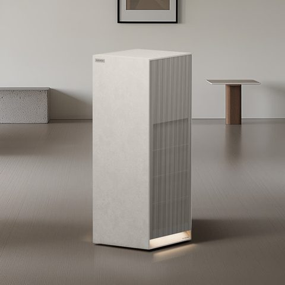

1위 쿠쿠 인스퓨어 헤리티지 28평형
499,000원 · 검증 리뷰 4,566건 · 별점 4.86
적용면적 28평형 · 소비전력 75W · 에너지등급 2등급
리뷰에서 좋았던 점
- 공기 상태에 맞춰 알아서 세기를 바꿉니다
- 디자인 칭찬이 가장 많았습니다
아쉬운 점
- 생각보다 크다는 리뷰가 있습니다
- 필터를 같이 살 수 없어 아쉽다는 리뷰가 있습니다
이런 분께: 30평대 집 거실 · 인테리어가 신경 쓰이는 분 · 한 대로 집 전체를 맡기실 분
네이버에서 지금 가격 보기